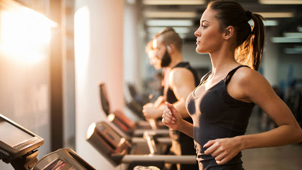

Nos activités :
espace musculation charges libres avec barres, poids et altères, bancs développé-couché, portique à poulie, rack à squatt, etc...
espace pour le renforcement musculaire avec des machines à charges guidées innovantes :nouveau concept américain pour éviter de se faire mal au dos,
espace cardio avec vélos, biking, RPM, spinning,3 types d’elliptiques, tapis de course, tapis de marche nordique, vélo couché, vélo à bras, rameurs...
espace abdominaux avec machines spécifiques
une salle de cours : ZUMBA, PILATES, STEP, Cuisse-Abdo-Fessier, CROSS-TRAINING, INTERVAL TRAINING HIIT, BIKING RPM SPINNING, BODY PUMP, etc.).
La forme pour tous
Ambiance familiale, inter-génération. O2FORM est la seule salle de sport de Toulouse qualifiée pour les séniors.
Grâce à ces équipements originaux et récents, agréables et performants, vous pourrez entretenir ou retrouver forme et bien-être.
Club de forme Toulouse
O2Form, le club de forme sur les coteaux au sud de Toulouse, à égale distance de Ramonville, Castanet,Venerque, Muret, Portet.
Proche de Lacroix-Falgarde, Labarthe-sur-Lèze, Pins-Justaret, Pinsaguel.